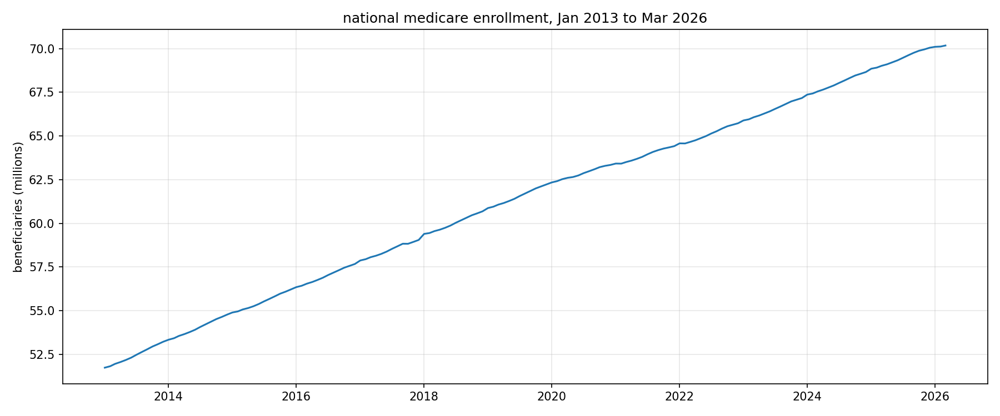
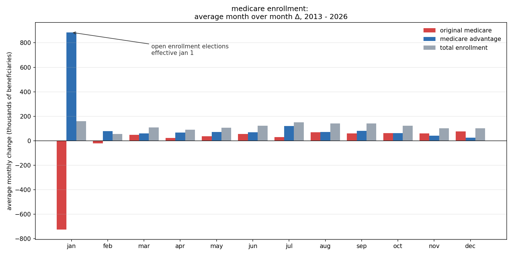
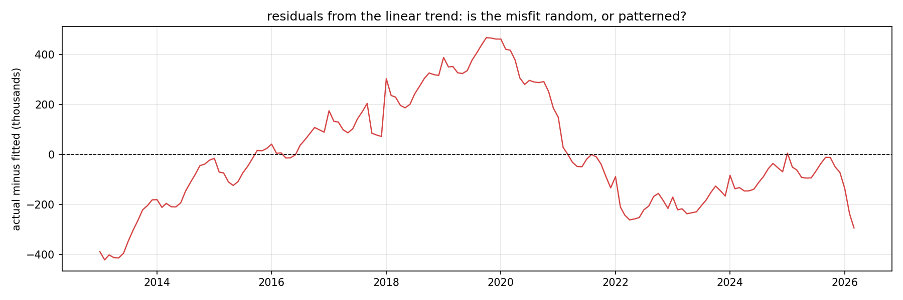

Healthcare · Forecasting · Python
Medicare Enrollment Seasonal Forecasting
I set out to build a seasonal index that could project Medicare enrollment forward for capacity planning. The assumption I started from was wrong, and finding out why turned into the analysis.
View the notebook on GitHub →The premise
Everyone knows open enrollment drives Medicare seasonality.
Open enrollment runs October 15 to December 7 each year, with coverage taking effect January 1. Every capacity plan in the industry is built around it. So I expected to find a seasonal pattern in enrollment, build an index from it, and project it forward.
Total enrollment swings 0.176 percent peak to trough. Roughly 124,000 beneficiaries against a base of 70 million. And November and December, the two months at the dead center of the enrollment window, carry the weakest and noisiest signal of any month in the series.

The mechanism
Open enrollment doesn't add people to Medicare. It moves them between plans.
Eligibility is reached by turning 65, which happens continuously in every month of the year. What the enrollment window governs is which plan a beneficiary holds. If that's true, the seasonal effect is real but invisible in the total, because switching moves people between categories that sum to the same number.
I split the total into Original Medicare and Medicare Advantage. The two parts sum exactly, in all 159 months, so the comparison is clean.
- The component profiles are mirror images, correlating at −0.99. Every month one gains, the other loses. That is what people moving between categories looks like, not two independent effects.
- The seasonal effect in the components is 19× larger than in the total. Medicare Advantage swings 3.41 percent. The total swings 0.176 percent.
- Advantage swings about 1.5× harder than Original, which is not a separate effect. It's the same people measured against a smaller pool. The pool ratio is 61/39, or 1.56. The observed ratio is close to 1.5. That agreement confirms a single flow of people.

What this changes
The hypothesis was looking at the wrong series. A planner watching total enrollment would conclude there is no seasonality worth modeling — and would be right about the number, and wrong about the business.
The stability test
Before projecting the index, I checked whether the pattern still existed.
A seasonal index is only projectable if the pattern it describes is a stable property of the calendar. The January index averages thirteen years, which assumes the effect has been roughly the same throughout. Medicare Advantage has grown from 28 percent of beneficiaries to 51 percent. That cannot continue indefinitely.
| Year | January switches | % of MA base | MA share |
|---|---|---|---|
| 2021 | 1,557,000 | 6.11% | 42.6% |
| 2022 | 1,362,000 | 4.87% | 45.5% |
| 2023 | 1,268,000 | 4.19% | 47.9% |
| 2024 | 1,007,000 | 3.09% | 49.9% |
| 2025 | 450,000 | 1.31% | 50.6% |
| 2026 | 99,000 | 0.28% | 50.9% |
Five consecutive years of decline. Down 94 percent from the 2021 peak. Medicare Advantage crossed half the market and effectively stopped growing.
The verdict
The historical January index of 1.016 describes a boom that is over. Applied to January 2026 it would have predicted roughly 885,000 switches against an actual of 99,000 — an overstatement of nine times. The index is not projectable, and I did not project it.
A correlation of 0.047 that means the opposite of what it looks like
The correlation between January switch volume and year is 0.047. Read alone, that says no relationship. It's a trap. Correlation only measures a straight line, and this relationship rises to a 2021 peak and then collapses. Split at the peak, the rising phase correlates at +0.89 and the falling phase at −0.97, both significant. A correlation near zero does not mean no relationship. It means no linear relationship.
What the data cannot say
Saturation at roughly 51 percent is the obvious explanation and it fits the timing. But Medicare Advantage market disruptions over the same period — plan exits, payment changes — would produce a similar signature. This analysis shows what happened. It cannot separate the causes, and a causal claim would need sources beyond this series.
The trend
An R-squared of 0.9984, and the model is still wrong.
A linear trend fit to the full series returns an R-squared of 0.9984. It looks like a perfect fit. The residuals say otherwise.

- Growth dropped sharply from 2020 to 2022, from a pre-2020 baseline of roughly 1.52 million a year to a low of 1.05 million in 2021.
- The growth rate recovered. The level did not. By 2024 and 2025 growth was back near baseline, but the cumulative shortfall against the pre-2020 path is roughly 1.17 million beneficiaries, and that deficit is permanent. A growth rate returning to normal does not restore a level that was lost.
- The fitted line sits about 300,000 above the last actual observation. A forecast starting from that line begins 300,000 too high and stays there.
So I refit the trend on the post-recovery window and anchored the projection to the last actual data point rather than to the line. That choice is worth roughly 233,000 beneficiaries over twelve months, and it depends on something this data cannot settle: whether the slow recent months are real deceleration or incomplete CMS reporting. I chose the more conservative anchor and documented why.

The recommendation
The action isn't in the total. It's in the switching.
Total enrollment goes up by about 113,000 in a normal month, smoothly. But in January 2021, 1.5 million people changed plans. Almost nothing that matters operationally or financially scales with how many people have Medicare. It scales with how many people are moving — plan revenue, marketing spend against the annual enrollment period, network planning, and the operational load of processing the change itself.
- Anyone forecasting January 2027 off the ten year average would plan for about 885,000 switches. The most recent actual was 99,000. That is nine times the volume, and it propagates into every number built on top of it — capacity, marketing spend, and plan growth assumptions alike.
- This runs backwards from what everyone expects. The Medicare industry has spent a decade planning around a January surge. The surge is the thing that is going away.
- The seasonal index would not have caught this. Built on thirteen years, January comes back at 1.016 and looks completely stable. The collapse only shows up when the index is tested year by year instead of trusted as an average.
What I'd want next
If Medicare Advantage is simply saturated, switching stays low and January capacity should be permanently reduced. If plans exited markets or payment rules changed, switching could come back and capacity should stay flexible. Telling those apart needs data this series doesn't have: plan availability by county, benchmark rates, plan-level enrollment. That's the next analysis.
Recommendation
- Forecast total enrollment on trend. It's reliable.
- Do not forecast January switching from this history. The pattern it's built on is gone.
- Size January 2027 capacity to recent actuals, not the ten year average.
- Watch the January 2027 number. It's the test of whether the decline has bottomed out.
Why this matters
A forecast that can't be defended is worse than no forecast, because someone will commit to it.